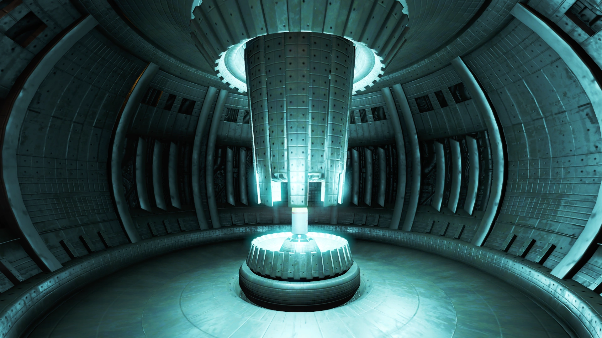

Science & Tech
Mass Fusion Achieves Nuclear Breakthrough
By: Tim Stahl

Mass Fusion Announces Nuclear Breakthrough—“Unlimited Power Within Our Grasp”
BOSTON, MA – In a dazzling press event held at the gleaming Mass Fusion Corporate Plaza, the energy giant unveiled what it claims to be the most significant advancement in nuclear science since the Manhattan Project—a revolutionary fusion-based reactor system capable of generating virtually limitless clean power. Dubbed the “Starlight Initiative,” the project has been quietly underway for over six years under tight military and corporate secrecy. Now, with prototype reactors already running at test sites across the Commonwealth, Mass Fusion executives say the future of energy has arrived—and it’s glowing. “This isn’t just a new reactor,” declared CEO Charles Kettering to an audience of corporate dignitaries, military brass, and GNN reporters. “This is a new age. The Age of Fusion.”
From Theory to Reality: The Power of Tomorrow
The science behind the Starlight Initiative builds upon decades of research into sustained plasma containment and zero-loss magnetic confinement fields. But according to Dr. Eliza Grant, Chief Reactor Architect for the project, a proprietary ‘flux-dense lattice’ fuel chamber is the real game changer. “For the first time in human history, we can maintain a fusion reaction at equilibrium—indefinitely,” said Dr. Grant. “We’re no longer chasing the sun. We’ve captured it.” Mass Fusion claims that a single pint of their new plasma fuel could power a major city for a year. The implications reach far beyond domestic grids—military applications, orbital colonies, and even deep-space propulsion are reportedly being explored in conjunction with Poseidon Energy and NERVA.
Critics and Consequences: Is the Glow Too Bright?
Despite the optimism, some voices urge caution. Representatives from the Department of Energy expressed concerns over weaponization potential and fusion waste byproducts, which remain classified under Congressional Seal. Meanwhile, anti-corporate watchdog group Commonwealth Truths issued a statement alleging that Mass Fusion’s success may have come at the cost of “unsafe labor practices, unauthorized human trials, and illegal Vault-Tec collaboration.” GNN reached out to Vault-Tec for comment, but received only a cheery pre-recorded voicemail.
Military Eyes and Quiet Contracts
Shortly after the announcement, anonymous sources confirmed that multiple Mass Fusion scientists have been placed under protective custody by U.S. Army units. General Chase, currently stationed in Anchorage, responded to questions with a firm: “National security interests are paramount. The rest is need-to-know.” Rumors of a mobile fusion power source being developed for battlefield T-51 power armor units remain unconfirmed.
A Glowing Future or a Meltdown in the Making?
Regardless of the questions, one fact remains: Mass Fusion’s reactor breakthrough could change the face of civilization as we know it. Whether it leads us to a golden tomorrow—or something far more irradiated—depends on whose hands are on the controls. For now, the world watches the skyline of Boston, where the Mass Fusion Tower pulses with new life. The future is bright… perhaps dangerously so.